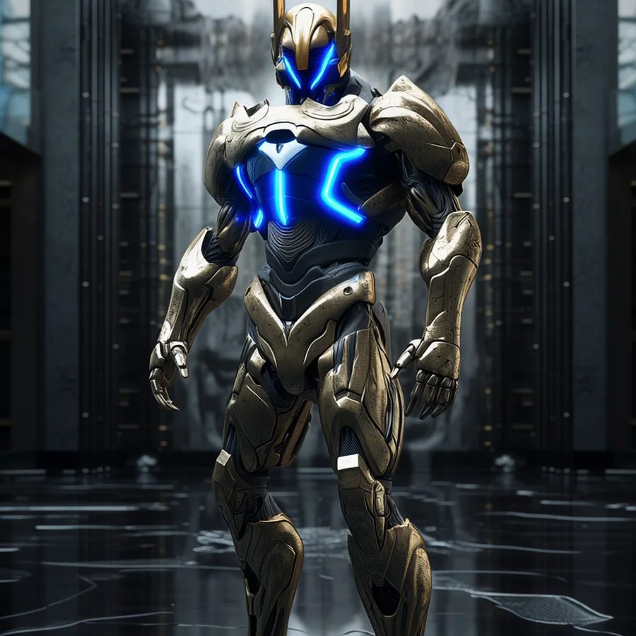
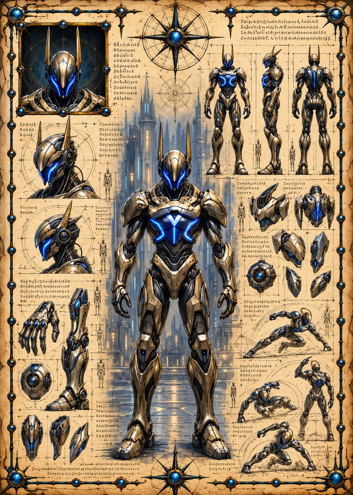

©
©
GENEZYS ARCHIVE · Earth 1 · Legionnaire
Grapi
Aeon Controller

Archive record
Grapi is one of the few Legions of the Exalted Order who can stop time, if only for a heartbeat. The Epoch Cascade freezes a single enemy and lands one devastating blow before the moment ends. Grapi swore the Still Hour long ago and has spent every year since preparing to hold it.
Combat signature
Epoch Cascade
120 Cosmara
340 Animus
290 Vitalis
Rips sequence from the moment: Stuns 1 enemy for 1 round and deals 220 damage.
Genezys 03:07 ™&©2026LEGIONS
